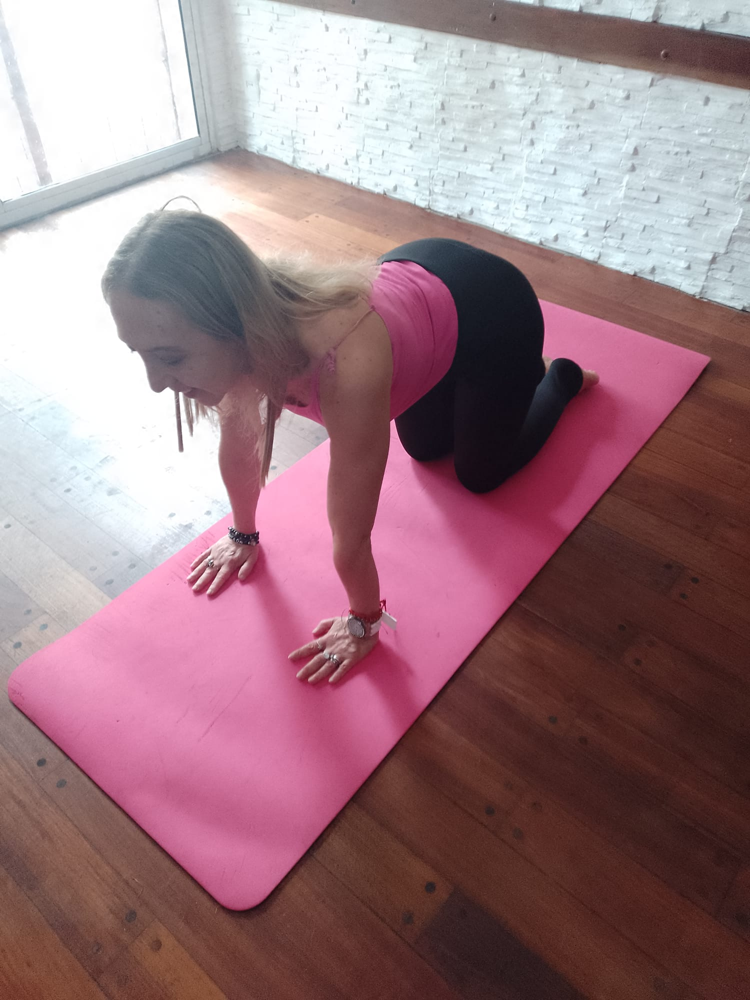
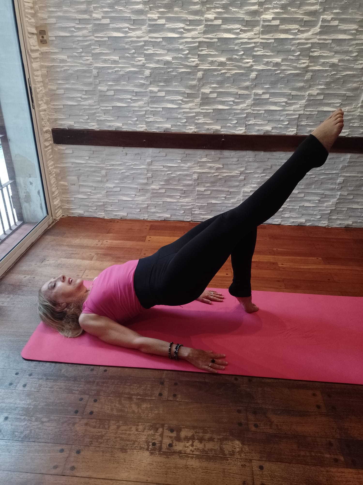
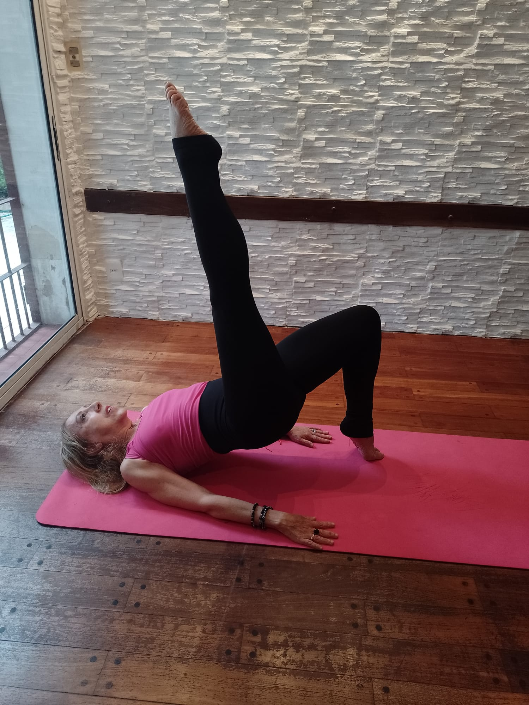
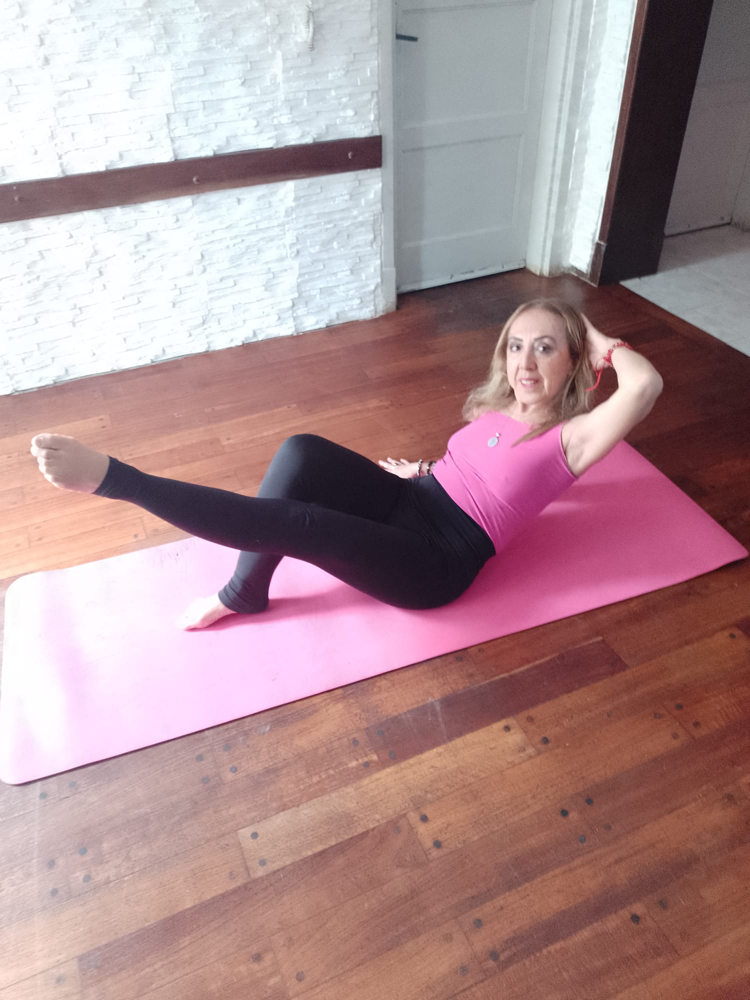
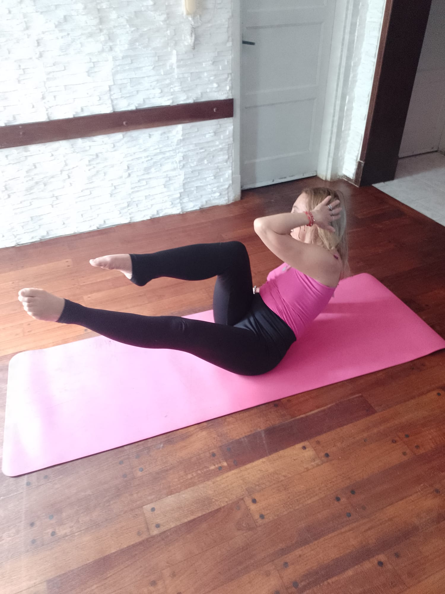
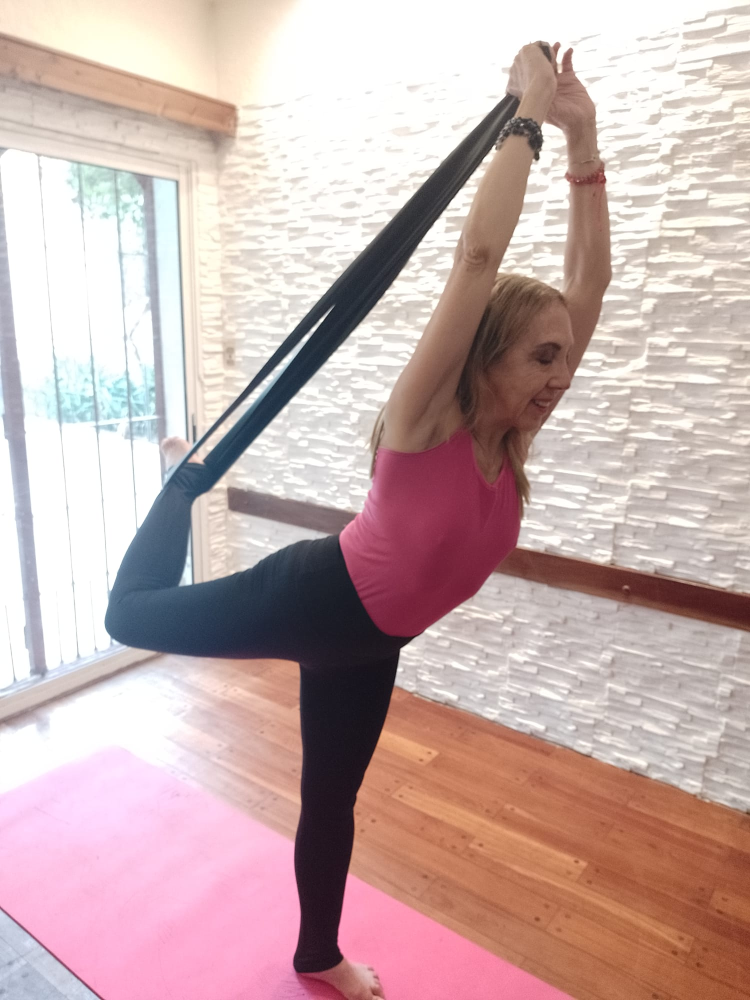
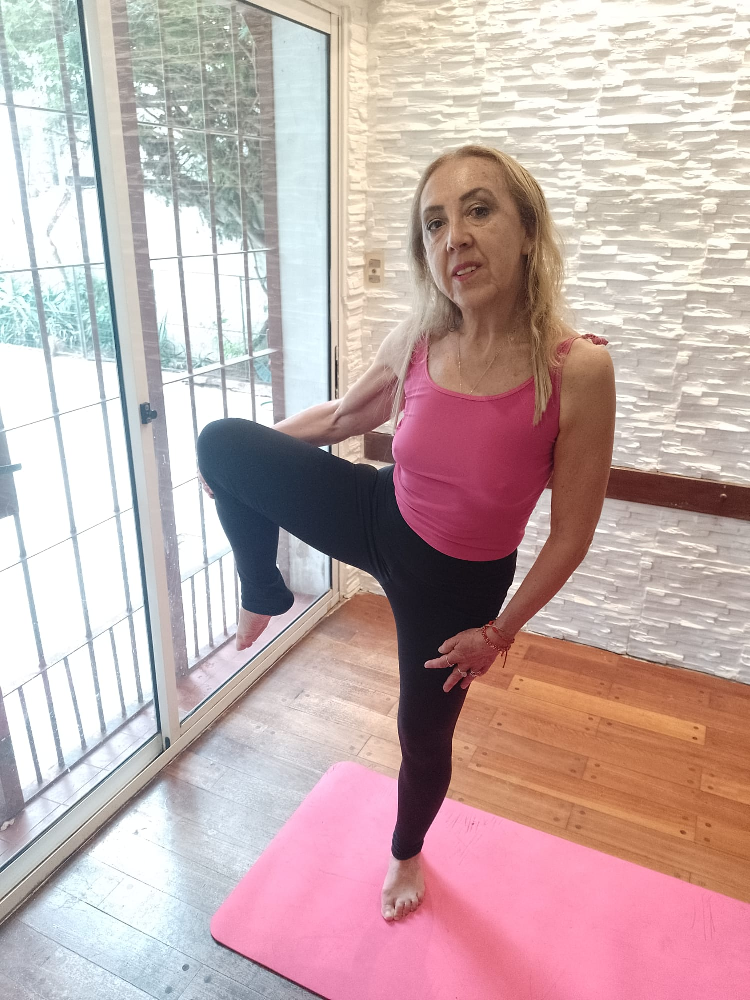
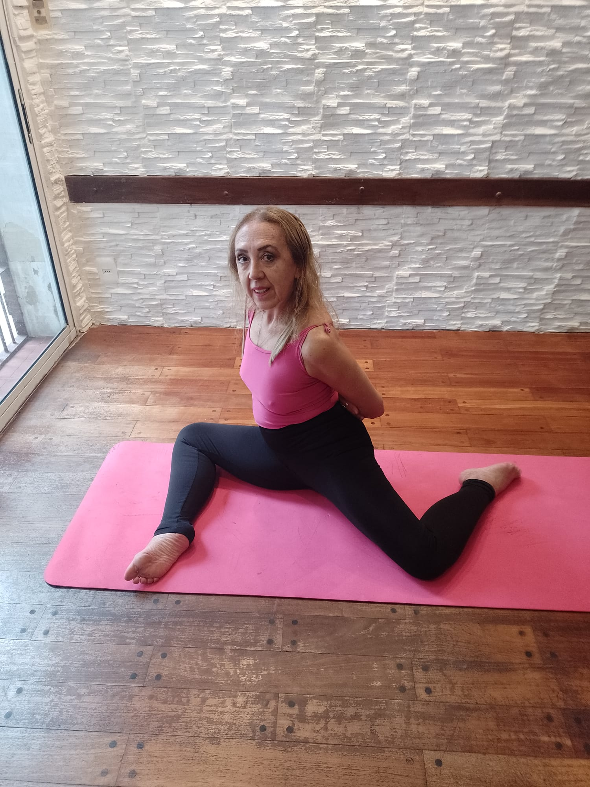
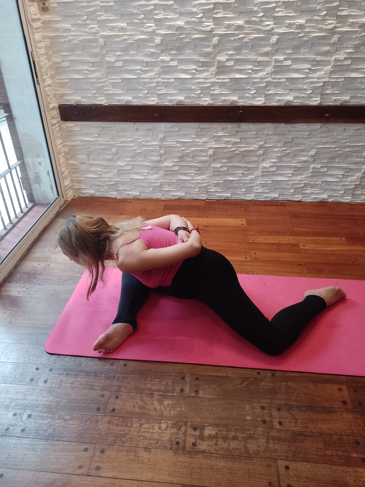

Flexión & extensión  Previous Next En cuatro apoyos, la pierna que trabaja sale hacia el lado con cadera abierta flexionada hacia adentro y extiende manteniendo la rodilla hacia el frente.
Elevación de glúteos   Previous Next Elevación de piernas en puente con apoyo de dorsales. La pierna que trabaja va vertical hacia arriba en rotación externa.
Abdominales bajos   Previous Next Posición inicial: dorsales separadas del piso. Una pierna flexionada apoyando el pie en el suelo y la otra en el aire extendida. Fase dos. La pierna apoyada en el piso eleva la rodilla y el codo opuesto viaja hacia la rodilla rotando el torso.
Isquitoibiales con banda  Previous Next Pie en punta y hacia atrás rodeado por la banda elastica. Flexionamos la rodilla hacia atrás. Elevo la rodilla y los gemelos con la ayuda de la banda. Buscando la mayor altura posible con la pierna estirada en isométrico
Detiré con apoyo  Previous Next Parte de un pasé abierto y busco extender la pierna buscando altura y manteniendo la rotación externa de la cadera
Torso   Previous Next Posición de sirena: cuadriceps flexionados y abiertos en direcciones opuestas. Paso los brazos por detrás de la espalda y lleva el tronco hacia adelante de la pierna flexionada. Subo el torso con la espalda derecha.